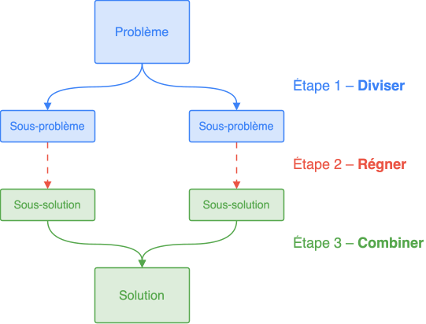
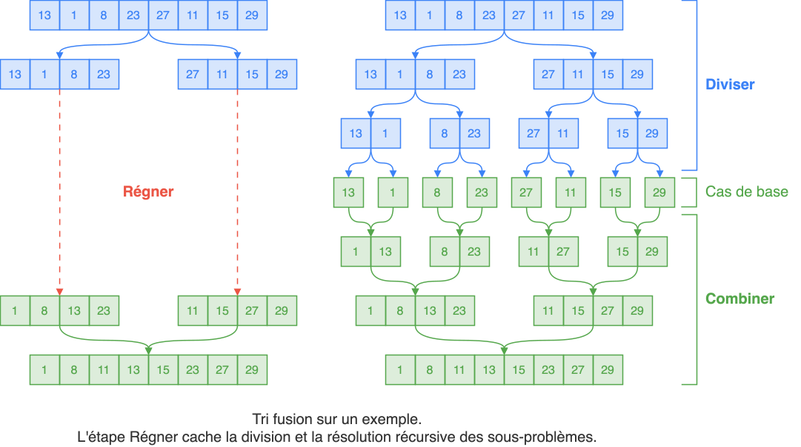
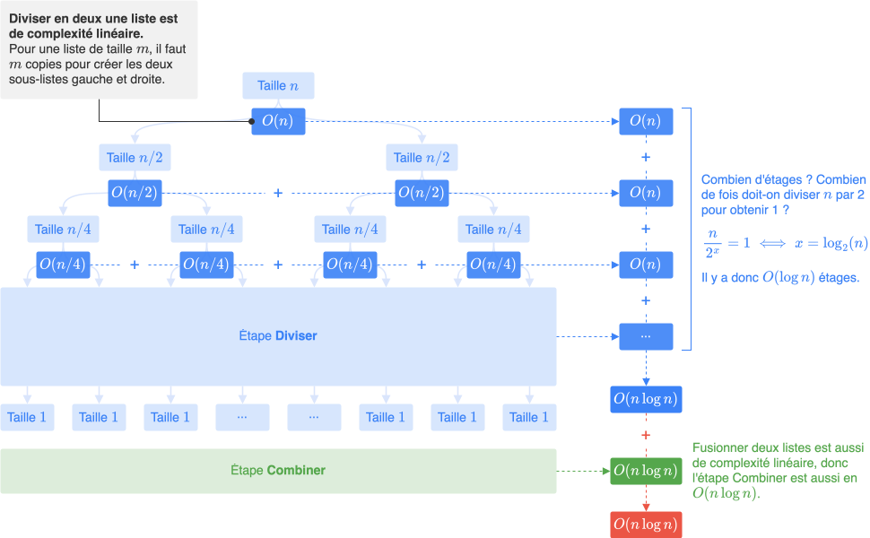

Diviser pour régner
Définition¶

Une fonction résoudre(problème) qui applique la méthode « Diviser pour régner » se déroule suivant les étapes :
-
Cas de base : Si le
problèmeest trivial, le résoudre immédiatement et renvoyer sa solution. -
Diviser : Sinon, diviser le
problèmeen plusieurs sous-problèmes indépendants. -
Régner : Résoudre ces sous-problèmes récursivement (c'est-à-dire appeler
résoudresur ces sous-problèmes). -
Combiner : Combiner les différentes solutions des sous-problèmes pour obtenir la solution au problème initial et la renvoyer. C'est l'étape la plus difficile à élaborer.
Pour appliquer la stratégie « Diviser pour régner » à un problème, on raisonne principalement sur l'étape Combiner : on suppose que les sous-problèmes ont été résolus, et on réfléchit à la manière de les réunir pour reconstruire la solution du problème initial.
Exemple : Tri Fusion¶
-
Le tri fusion applique la stratégie « Diviser pour régner ». Ce tri consiste à :
- Cas de base : Si la liste ne possède qu'un élément ou moins, elle est déjà triée, la renvoyer.
- Diviser : Sinon, diviser en deux la liste à trier.
- Régner : Trier récursivement les deux sous-listes.
- Combiner : Fusionner les deux sous-listes triées en une liste triée et la renvoyer.

-
Une implémentation possible en Python :
def fusionner(A, B): """ Fusionne deux listes triées en une seule liste triée. """ F = [] a, b = 0, 0 # indices pour parcourir A et B while a < len(A) and b < len(B): if A[a] < B[b]: F.append(A[a]) a += 1 else: F.append(B[b]) b += 1 return F + A[a:] + B[b:] # ajoute les éléments restants def tri_fusion(tab): if len(tab) <= 1: # cas de base return tab m = len(tab) // 2 G, D = tab[:m], tab[m:] # Étape 1. Diviser G, D = tri_fusion(G), tri_fusion(D) # Étape 2. Régner return fusionner(G, D) # Étape 3. Combiner -
Cet algorithme de tri a une complexité en temps de \(O(n \log n)\) (quasi-linéaire).
